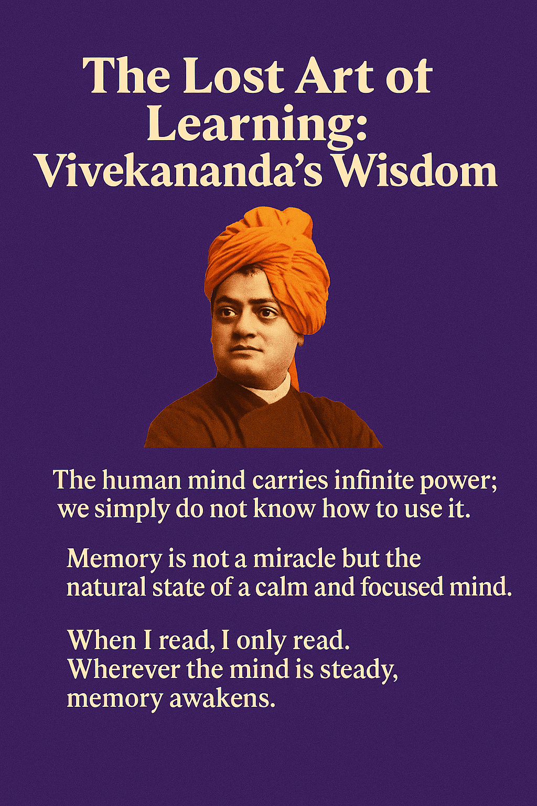

We live in a time where the mind is constantly pulled in every direction—messages, screens, deadlines, and distractions. Students often believe that their memory is weak or that they lack the ability to study deeply. But more than a century ago, Swami Vivekananda offered a profound reminder: the human mind carries infinite power; we simply do not know how to use it.
Memory Is Our Natural State
Vivekananda said that memory is not a miracle or a gift given to a few. It is the natural expression of a calm and focused mind. Forgetfulness happens only because our thoughts are scattered. Imagine dust settling on a mirror—when the mirror becomes cloudy, it cannot reflect clearly. Our consciousness behaves the same way.
When we learn to discipline the mind, knowledge becomes effortless.
“When I read, I only read,” Vivekananda once said. His extraordinary memory was not a result of talent, but of complete presence.
The Power of Concentration
Students today often read with only a small part of the mind. The eyes move over the lines, but the mind wanders through worries, notifications, and unfinished tasks. In such a state, memory cannot stay.
Vivekananda advised not to fight the mind, but to watch it. The moment you observe your wandering thoughts, they begin to settle. In that quietness, learning becomes deeper and richer.
Learning with the Whole Being
For Vivekananda, memory was not only a mental activity; it was connected to confidence, courage, and determination. When you study with your whole being—mind, attention, intention—knowledge becomes part of you.
He emphasised:
- Don’t learn only with your eyes; learn with your awareness.
- Don’t memorise out of fear; understand with curiosity.
- Let knowledge connect with your life, not just your exam preparation.
Students often forget because they treat information as words, not experiences. True learning happens when you feel what you study—when a sentence touches you or when an idea comes alive in your imagination.
Meditation as the Center of Learning
Meditation, according to Vivekananda, is not just sitting quietly. It is the ability to be fully present in what you are doing. A quiet mind receives knowledge the way fertile soil receives a seed.
A simple practice for students:
- Before studying, sit silently for 2–3 minutes.
- Take slow breaths.
- Allow the mind to settle.
Then begin reading—not with pressure, but with openness. You will notice that understanding becomes sharper and memory becomes deeper.
The Importance of Silence, Pauses, and Reflection
Continuous reading without reflection exhausts the mind. Learning requires pauses—moments where the mind digests information.
After every paragraph or page:
- Close the book briefly.
- Ask yourself: “Do I understand this?”
- If not, revisit the idea with a calmer mind.
This reflection is what converts reading into retention.
Repetition with Understanding, Not Rote Learning
Vivekananda differentiated between dead repetition and living repetition. Dead repetition means memorising without understanding. Living repetition means revisiting ideas until they become clear.
One of the best ways to do this is to teach someone else—even if it is an imaginary student. Explaining something in your own words strengthens your grasp like nothing else.
Letting Go of Fear and Comparison
Fear is memory’s greatest enemy. Whether it is the fear of failure, parental pressure, or comparison with peers, fear closes the mind.
A calm student learns faster than a frightened student. A curious mind learns better than a competitive mind.
Remember: Your pace is your own. Do not measure your progress with someone else’s scale.
Learning as Growth, Not Pressure
Vivekananda believed that learning is an art—slow, steady, and beautiful. Like a flower, your mind cannot be forced open. It blossoms when you give it:
- Attention
- Silence
- Curiosity
- Consistency
When you learn for joy and understanding, memory follows naturally. When you learn only for marks, memory often disappears.
The Core Message for Today’s Students
Learning is not about stuffing information into the brain. It is about expanding awareness. It is about becoming a deeper, calmer, more confident version of yourself.
When the mind settles, memory awakens. When understanding grows, learning becomes a lifelong companion. And when knowledge becomes part of your character, not just your notes, it stays with you forever.